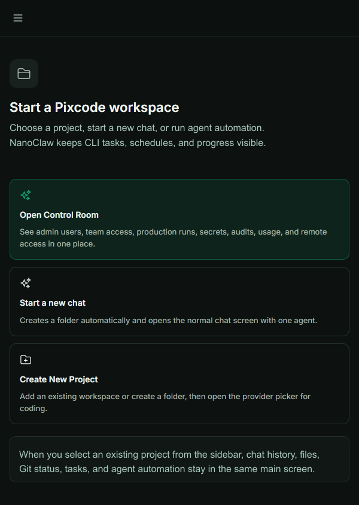

Built-in automation patterns
Send a prompt to Claude Code, Codex, Cursor CLI, Gemini CLI, Qwen Code, OpenCode, or Grok through POST /api/nanoclaw/run. Pass agentType (or prefix the prompt with [agent:codex]) when you need a specific CLI.
Create a once, interval, or cron task with POST /api/nanoclaw/tasks. The task queue stores status and recent run logs so a disconnected browser can safely reconnect later.
List and inspect tasks, then pause, resume, update, cancel, or delete them with the /api/nanoclaw/tasks/:id endpoints. The UI-compatible /api/tasks alias is available for existing clients.
Administrators can use /api/production-agent-loop/* for issue-to-PR automation, CI repair plans, review queues, scheduler jobs, snapshots, and desktop-release policy checks.
Run controls that survive reconnects
NanoClaw keeps the control plane small and explicit. Every operation is authenticated, scoped, and safe to repeat from a mobile browser or a plain terminal.
- Use a scoped
px_API key inAuthorization: Bearer …orX-API-Key: …. - Keep project context explicit with
projectIdand (for local trusted callers)projectPath. - Inspect
GET /api/nanoclaw/statusandGET /api/nanoclaw/helpbefore automating. - List task state with
GET /api/nanoclaw/tasks?projectId=…; fetch recent logs from the task detail endpoint. - Use a one-shot stream ticket from
POST /api/auth/stream-ticketfor browser SSE/WebSocket connections. Do not put reusable credentials in URLs. - Use production-agent-loop routes only with an administrator-scoped key; they are intentionally separate from end-user task scheduling.
- For terminal-only users, the same REST calls work with curl, PowerShell, or any small HTTP client.
Run an agent from curl
This is the smallest current integration. It returns structured status, the selected agent, and bounded logs; no workflow graph or provider token is exposed.
curl -X POST http://localhost:3001/api/nanoclaw/run \
-H "Authorization: Bearer px_your_key_here" \
-H "Content-Type: application/json" \
-d '{
"prompt": "summarize git status and list the next safe step",
"agentType": "codex",
"projectId": "my-app"
}'Migration note for older workflow clients
The pre-1.55 /api/orchestration/* workflow family is retired. Existing clients should move one operation at a time: replace a preview or run with /api/nanoclaw/run, replace scheduled workflows with /api/nanoclaw/tasks, and move administrator review/CI actions to /api/production-agent-loop/*. The public OpenAPI document and cookbook are the source of truth for request and response shapes.
tasks:read and tasks:write scopes are enough for NanoClaw status, runs, schedules, and task lifecycle.
Production agent loop endpoints require the corresponding orchestration:read/orchestration:write scopes and an admin account.
Automation in the product

